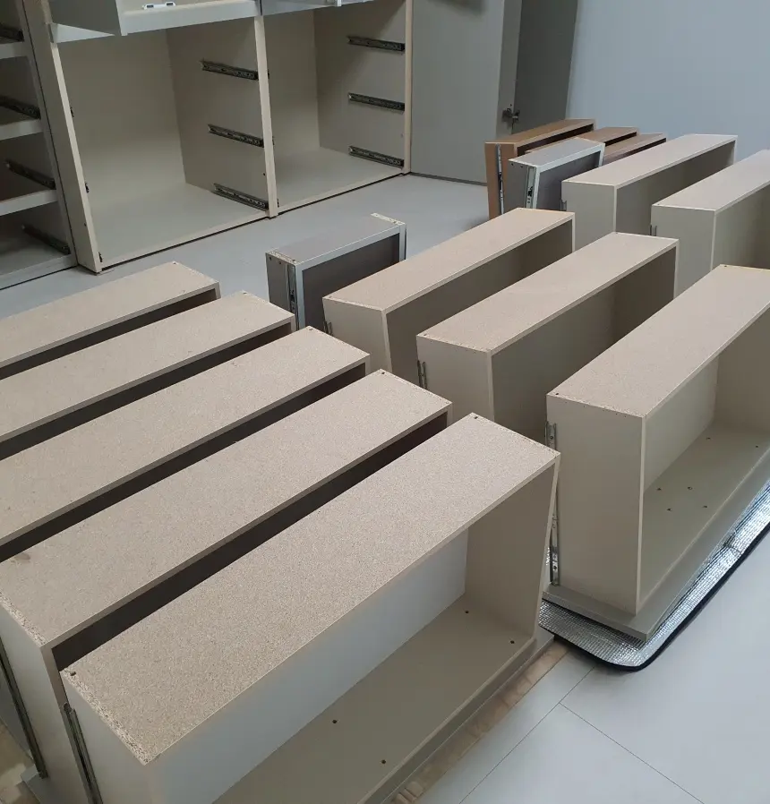
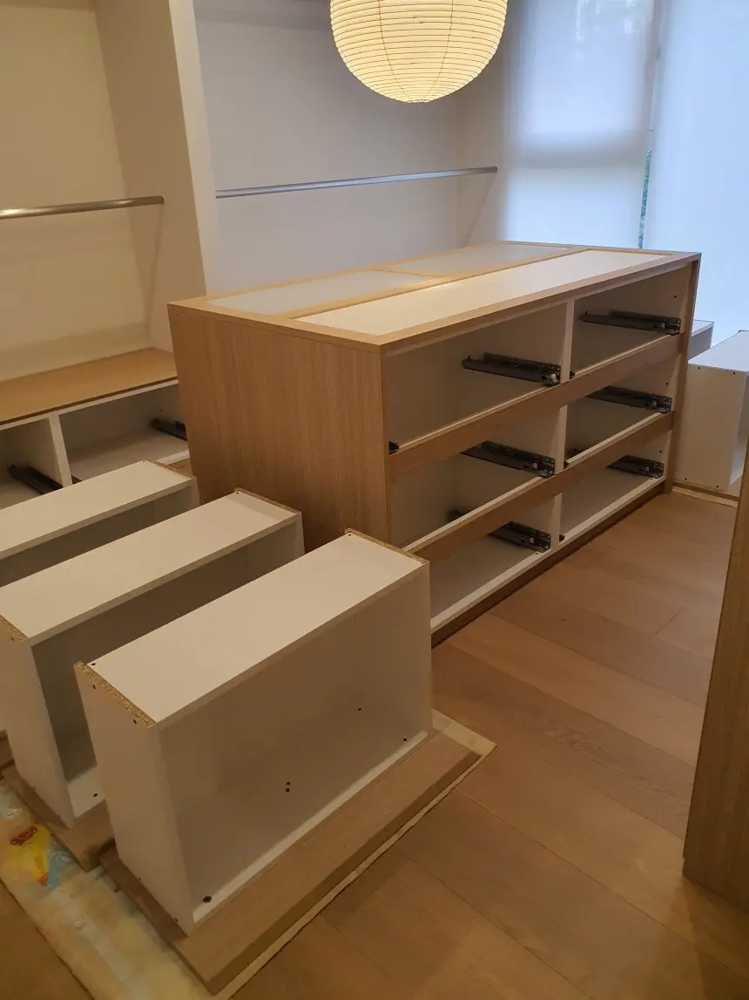
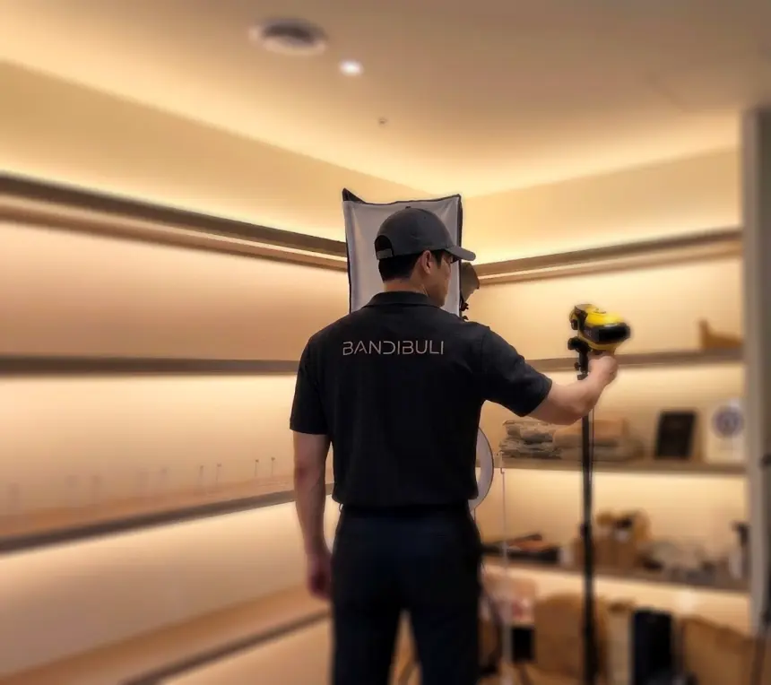
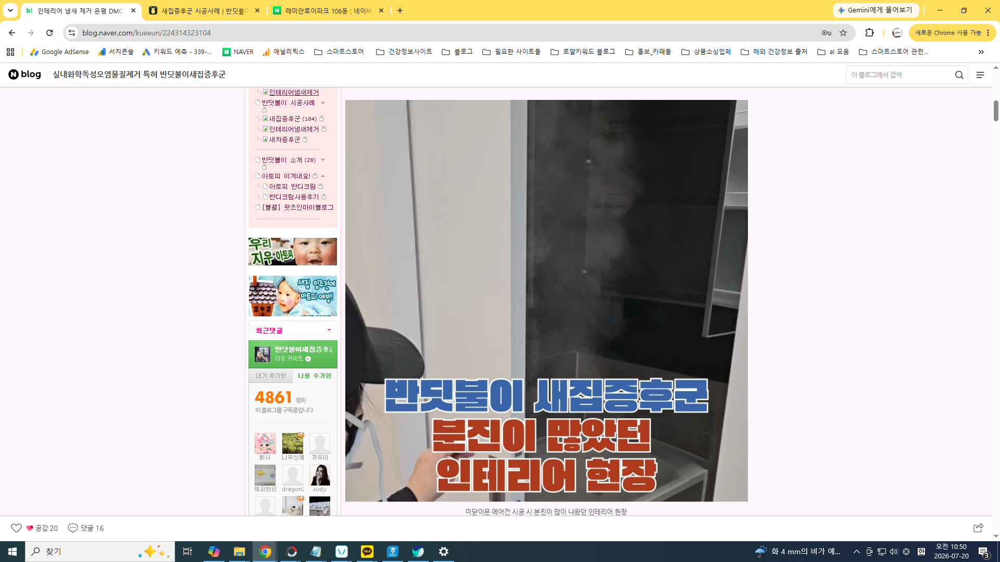
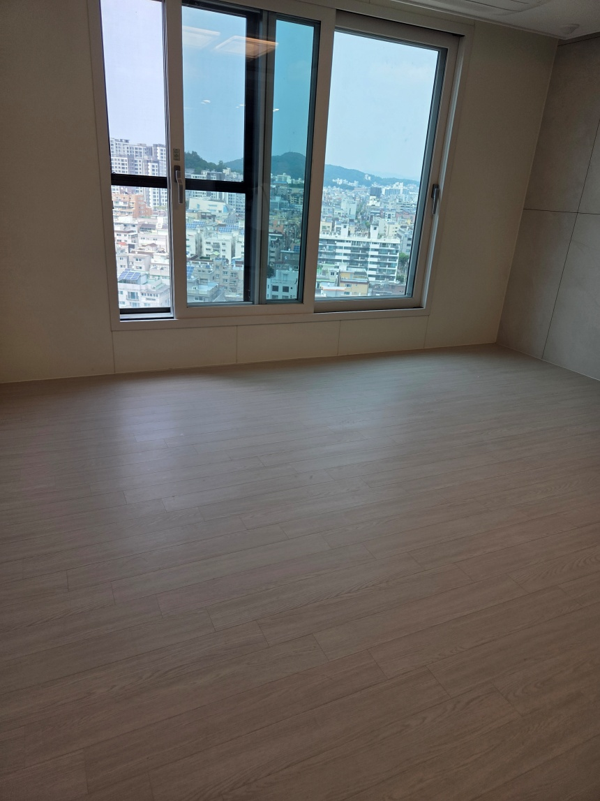
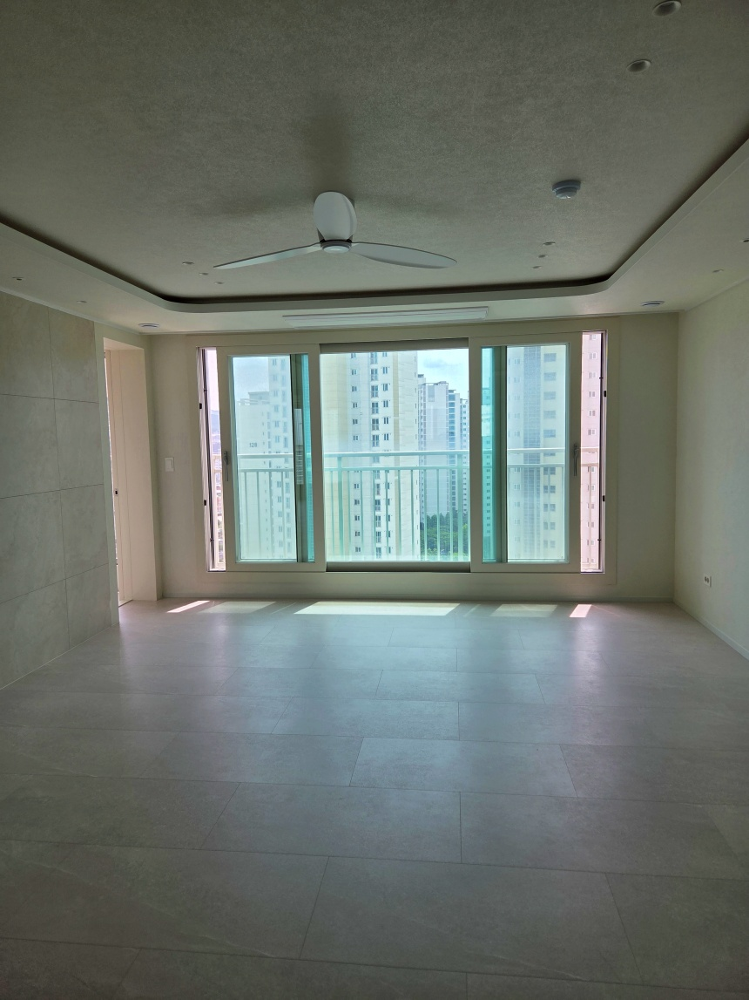
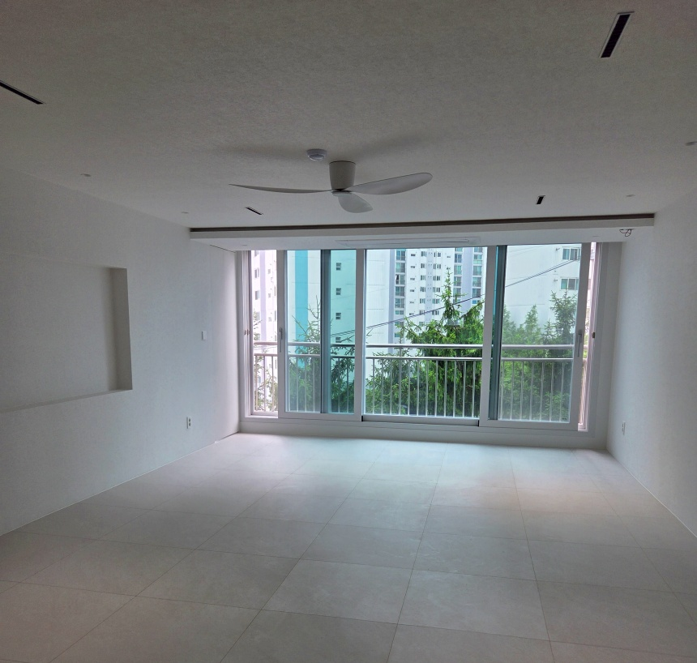
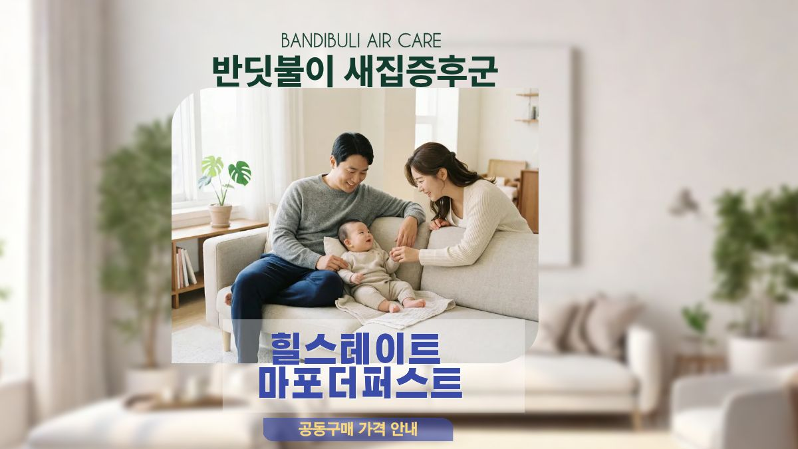
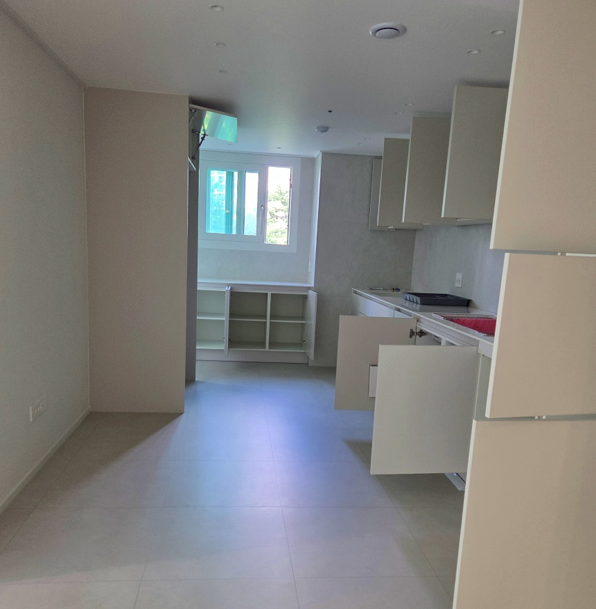

단골고객 재의뢰 / MDF 새 가구반딧불이 새집증후군, 단골고객이 다시 맡긴 인테리어 현장
- 요약
- 이전 시공을 경험한 고객이 새로운 인테리어 공간을 다시 맡긴 반딧불이 새집증후군 재의뢰 현장입니다.
- 시공 포인트
- MDF 새 가구의 미마감 노출면을 확인하고 액상 분해, 차폐, 오존 산화와 H13 HEPA 공기정화 공정을 진행했습니다.
Construction cases
실제 현장 중심으로 정리한 대표 시공사례입니다.

단골고객 재의뢰 / MDF 새 가구
59평 올수리 아파트 / 붙박이 가구
오피스 타워 / MDF 가벽과 선반
은평구 DMC자이 / 올수리 후
은평 자이더스타 / 입주청소 전
홍은벽산아파트 / 올수리 신혼집
마포 도화동 / 구축 아파트 올수리
입주민 공동구매 입주 후 새집증후군 / 올수리 아파트
입주 후 새집증후군 / 올수리 아파트

군포 래미안하이어스 / 신생아 입주 전